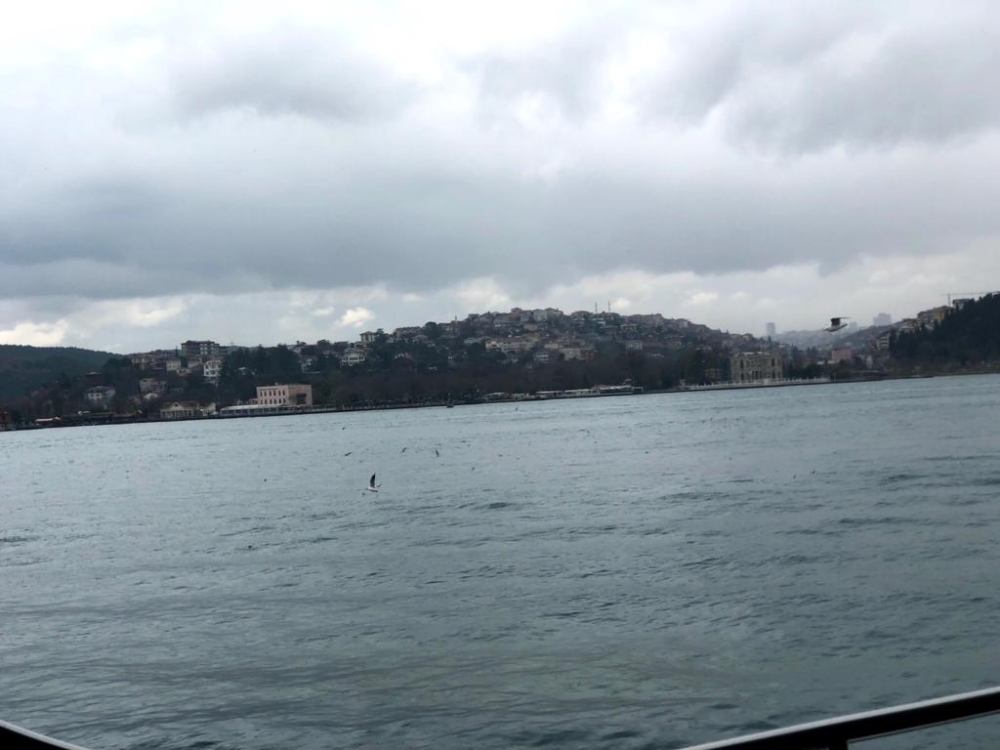
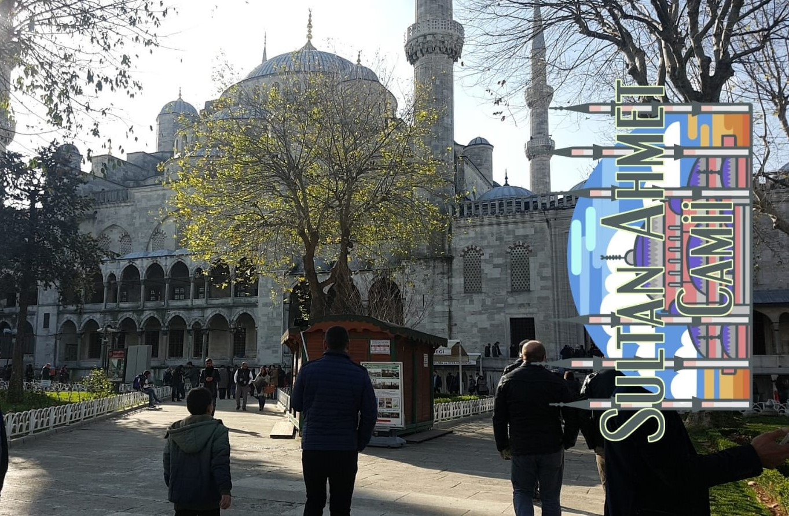
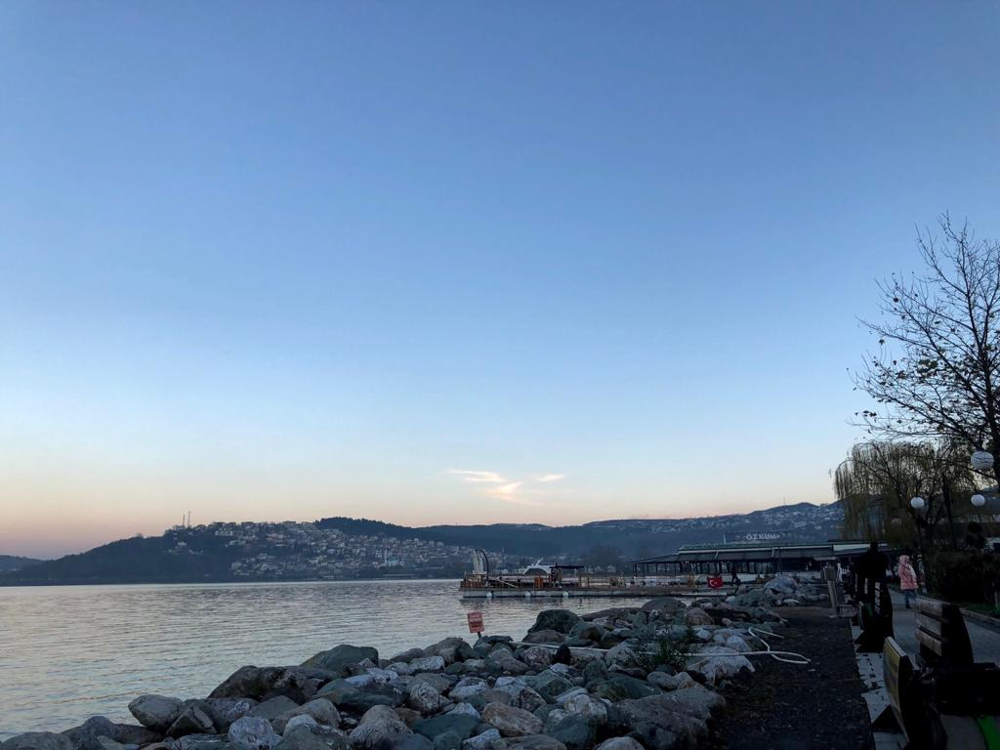
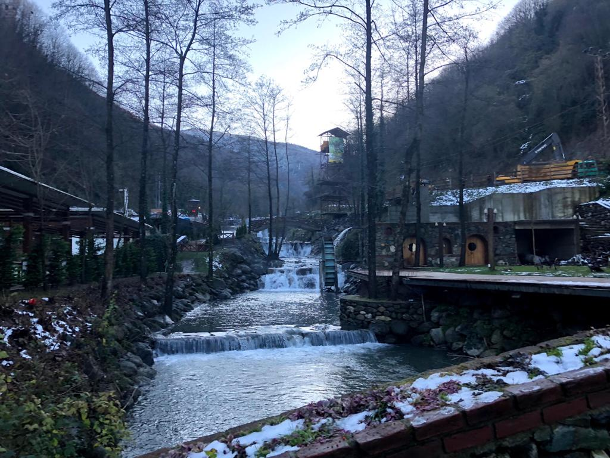
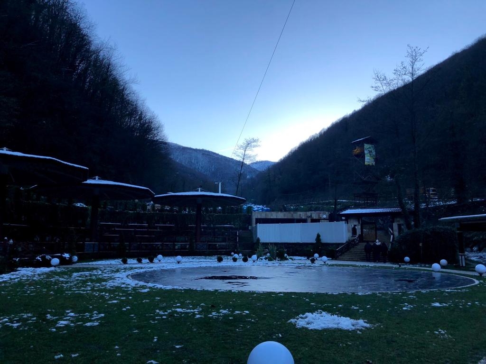
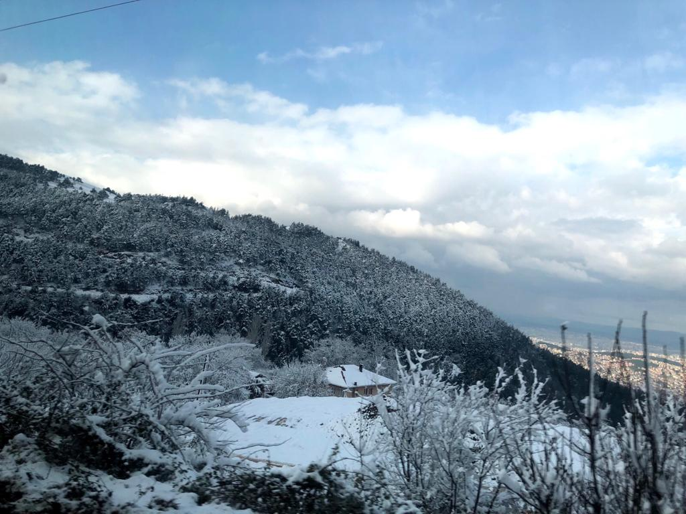

The Beautiful Scenery in Turkey
Scenery in Istanbul:
There is a lot of beautiful scenery espeically in Istanbul, which is surrounding by the Bosphorus Strait. These are photos that I took from my trip there showing the beautiful scenery in Istanbul. This includes the beautfuil mosques that they have from ancient times, which are huge tourist attraction sights. There was this place that would face Istanbul from the opposite side of the that is one of the most peaceful place I have been too. It has this long strip where you could walk next to the strait of water and there were a lot of food trucks and canteens. I remember sitting there just watching the sun set for an hour and looking at the most beautiful sunset that I have ever witnessed. How the color of the sun setting was becoming purple mixed with the blue and orange, it was very mesmerizing.
  Scenery in Boursa:
Boursa was the most beautful place that I have ever visted, amazing view from the top of mountains, in between mountains, and ponds. Since I visited in the end of December, the mountains and area was filled with snow which made more breathtaking views. My family and I went on a tour where they took us to top one of the mountains and it was filled with snow, it was extremly magical how white the snow looked, the nature in Boursa was enchanting. There was this area that was in between mountains that held a small pond and lake that with small fountains that were natural. It was in the middle of a forrest area in the mountains so we had to go very deep in the mountains to be able to visit the area.
  